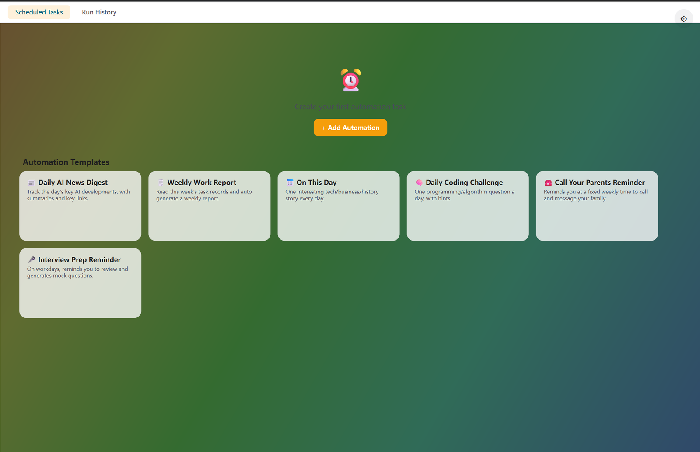

它能做什么
一句话建任务
「每天早上 9 点帮我把昨天的行业新闻整理成一份摘要」——说完就有了一条自动化。
周期与一次性都支持
每天、每周、每月，或者只在指定时间执行一次。
本地调度
调度与数据都在本机，不上传云端。
执行历史
跑过几次、每次结果如何、有没有失败，都有记录。
可暂停可删除
不想要了随时暂停或删掉。
怎么用
- 1侧栏「自动化」→ 新建，写下要做什么。
- 2设定时间与频率（每天 / 每周 / 指定时间一次）。
- 3保存后在列表里查看下次执行时间与历史结果。
技术亮点
- 自动化定义与运行状态分别持久化，重启后调度不丢。
- 每次执行独立记录结果，便于判断是内容问题还是环境问题。
看一眼
